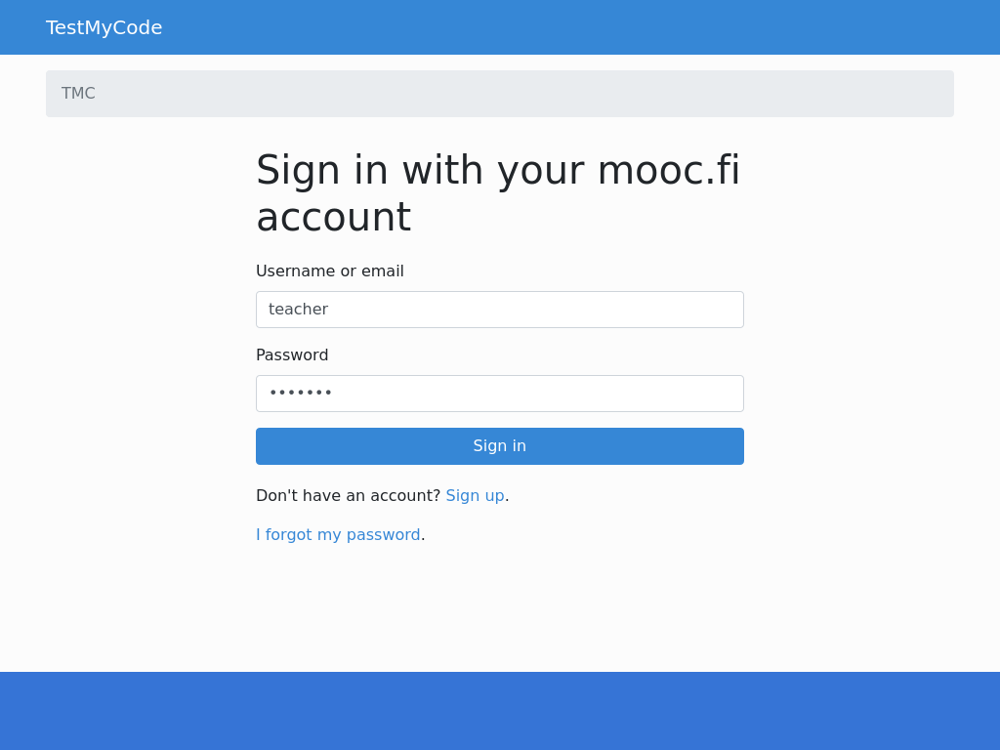
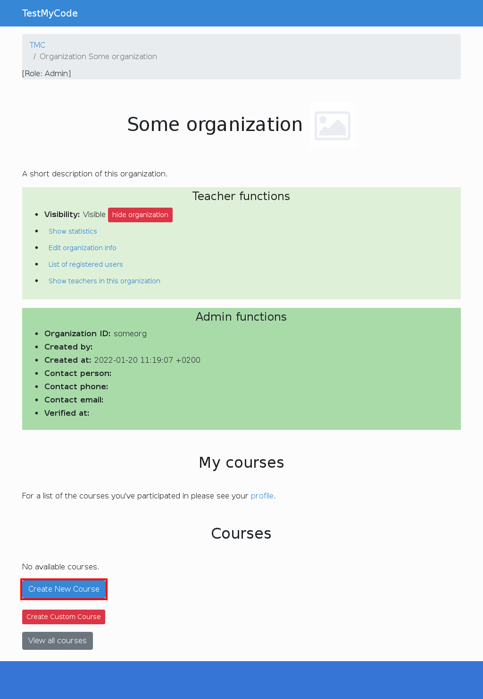
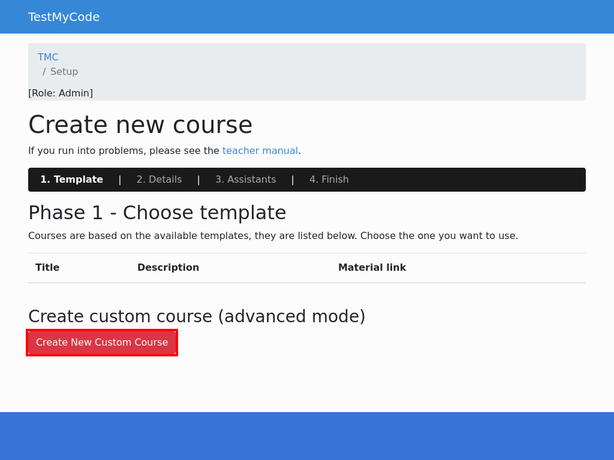
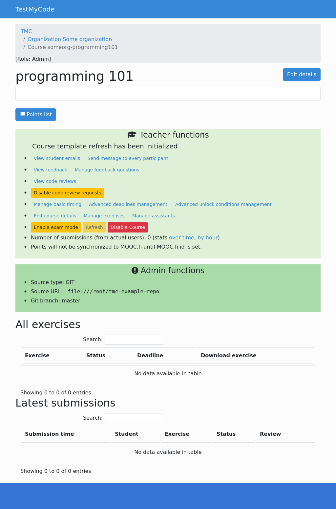
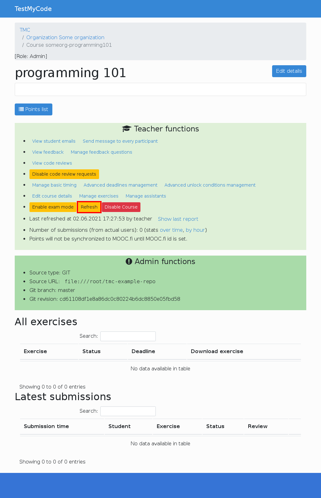
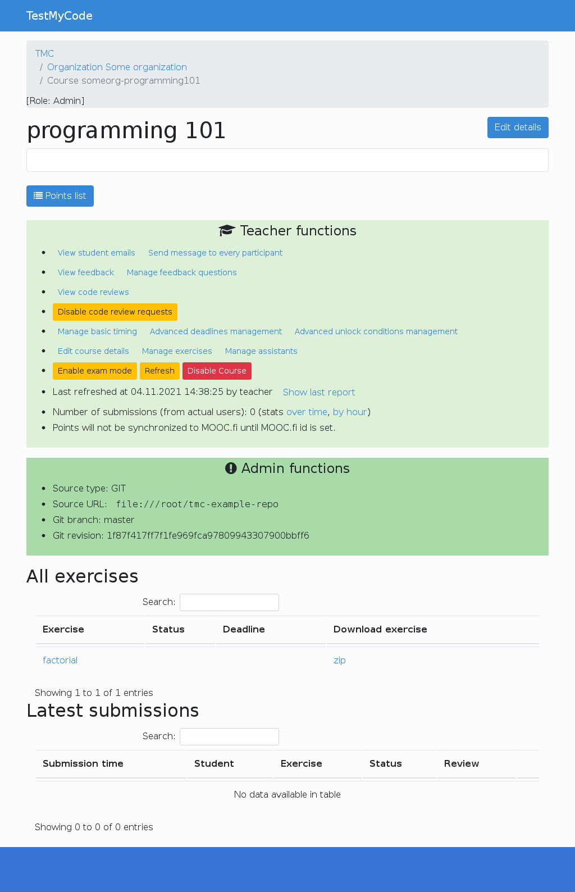

TMC exercises are stored in a git repository. Although we'll cover the basics here, we highly recommend you learn to use git properly, especially if you collaborate with other course instructors. We chose it because it's a supremely useful tool that saves time and frustration even when working alone.
Let's log in as a teacher of some organization.
Now we can create a new course for our organization.
From this page we select to create custom course.
We'll name our course "programming101", and we'll also have to give the address of the git repository where we'll store the exercises. Also we have to define the git branch. Master branch is good for us.
You need to give a remote GIT repository address.
If you have an existing repository, say on GitHub,
enter its read-only URL as the remote repo.
In this example we'll pretend the remote repo is at
file:///root/tmc-example-repo.
For rest of the creation phases, just click continue. After last phase the course is created successfully and you should see course's main page.
Now we'll need to add some exercises. To do that, we'll need to clone the remote repository, make our changes and push them back, as usual with git.
We start by cloning the course template (not to be confused with course templates that exist in TMC webapp), which has some useful scripts. We'll name the template repo as the 'template' remote, since won't be pushing back to the template. The actual course repo will be the 'origin' remote.
Now we'll push everything we got from the template into 'origin'.
The -u flag makes the master branch track
the master branch in 'origin'. This means that whenever we commit to master and push,
it'll push to 'origin' by default (and not to 'template').
An exercise is just a NetBeans project with some unit tests and
at least the JUnit and edu-test-utils libraries included.
We pulled a handy template exercise into private/template_project from the course template.
It's not advised to copy the template directly but instead use scripts/create-project
as it automatically also renames the exercise in all relevant NetBeans settings files.
Now that we have a blank project, we can finally write our test cases and stub class. Open the project in NetBeans and write the following files.
public class Factorial {
public static long factorial(long n) {
// BEGIN SOLUTION
long result = 1;
for (long i = 2; i <= n; ++i) {
result *= i;
}
return result;
// END SOLUTION
// STUB: return 0; // Please write your code here
}
}
import org.junit.Test;
import static org.junit.Assert.*;
public class FactorialTest {
@Test
public void miscellaneousFactorials() {
assertEquals(2, Factorial.factorial(2));
assertEquals(6, Factorial.factorial(3));
assertEquals(24, Factorial.factorial(4));
assertEquals(3628800, Factorial.factorial(10));
}
@Test
public void factorialOfOneIsOne() {
assertEquals(1, Factorial.factorial(1));
}
@Test
public void factorialOfZeroIsOne() {
assertEquals(1, Factorial.factorial(0));
}
}
We marked solution code we don't want the student to see with special comments. TMC will automatically make two versions of each exercise: a stub version that will be given to students and a solution version that will be shown as the model solution.
The stub version has the parts in begin/end solution tags removed
and lines starting with // STUB: uncommented. The stub comments are
mainly useful to avoid the missing return statement compilation error.
The solution version is effectively the same as the original but has stub and solution
comments removed.
The tmc-netbeans-author plugin is recommended as it provides syntax highlighting for all these comments.
Let's commit and push our changes.
The webapp won't react to changes in the repository before you 'refresh' the course. This may be inconvenient, but it also somewhat protects against mistakes.
The system now reloads all exercises from the repository and rebuilds its internal caches. Any submissions made to previous exercises will survive this process, even if the exercise is deleted in the push.
The exercises should now be available for download and they should accept submissions.
Notice that course progression can now be configured from the webapp. Configuration from the repository is only loaded initially, and will not change after subsequent refreshes.
TMC can be used to offer courses that may be started at any time. To avoid overwhelming the student and to provide a bit of a reward system, TMC may be configured to unlock and provide for download a set of new exercises only after the student has completed a certain amount of previous exercises. In addition, TMC supports imposing a personal deadline such as "you must complete this exercise withing one week of unlocking it".
Let's assume we have the following exercise directories.
As per TMC's naming conventions, these define the exercises named part01-first and so forth.
part01/firstpart01/secondpart02/thirdpart02/fourth
To define when an exercise is unlocked, one must write a metadata.yml for the exercise
or its parent directory. Let's write the following into part02/metadata.yml as an example.
It will define that the exercises under part02 will only become visible
after the student has gotten 80% of all possible points under part01, including all possible points from
part01-first.
It also says that the exercise shall not unlock before the 12th of June.
unlocked_after: - 80% of part01 - 100% of part01-first - 2012-06-12
Now the IDE plugin will offer part02's exercises for download as soon as all the unlock conditions are met. Before that, the student will not see these exercises anywhere in TMC.
TMC remembers when an exercise was first unlocked for a student.
This makes it possible to set personalized deadlines.
For instance, the following metadata.yml definition sets the deadline
for the exercise(s) it applies to to be one week after the student has unlocked it,
but no later than the 12th of July.
deadline: - unlock + 1 week - 2012-07-12
If an unlock + ... deadline definition is present,
exercises will not unlock automatically. Instead, the IDE plugin
prompts the user to unlock and download the next set of exercises.
The user may only unlock all possible unlockable exercises at once, not one at a time.
Students that do not wish to use an IDE may unlock exercises through the web application.
The full syntax of unlock conditions and deadlines is documented in the metadata.yml reference.
Solution code can be demarcated with special comments so it will be removed from the version the student gets (the "stub" version).
// BEGIN SOLUTION ... // END SOLUTION - will be removed from the stub.// STUB: ... - will be uncommented in the stub version.// SOLUTION FILE - files containing this line will be removed from the stub./* PREPEND HTML ... */ - puts arbitrary HTML on the solution page. Removed from stub.
public class Example {
public int sampleMethod(int a, int b) {
// BEGIN SOLUTION
// The student will not see this implementation nor this comment
// before the model solution is published.
return a * (b + 3);
// END SOLUTION
// STUB: return 0;
}
}
// SOLUTION FILE
// This file will not be present in the exercise given to the student
// but will be part of the model solution.
public class AnotherExample {
// ...
}
Analogous XML comments will work for .xml and .jsp files:
<!-- BEGIN SOLUTION --> ... <!-- END SOLUTION --><!-- STUB: ... --><!-- SOLUTION FILE -->The tmc-netbeans-author plugin is recommended as it provides syntax highlighting for the special comments (though XML highlighting is not yet supported).
TMC can be configured by placing certain files in certain directories.
There are four kinds of configuration files as listed below, but mostly you only need
metadata.yml files.
metadata.yml - used to configure exercises and groups of exercisescourse_options.yml - used to configure the course as a whole.tmcproject.yml - used to configure the client side IDE plugin.tmcrc - used to prepare the server side execution environmentmetadata.yml
metadata.yml may be placed in an exercise directory
or any other directory, which will cause it to be applied to all
exercises below that directory. You may also specify defaults
in a parent directory's metadata.yml and override them
selectively in subdirectories.
metadata.yml may contain directives as in the following example:
hidden: false unlocked_after: 80% of exercise1 deadline: 2010-02-15 publish_time: 2010-02-01 returnable: false gdocs_sheet: week1 solution_visible_after: 2010-02-15 runtime_options: ["-Xss8M"] valgrind_strategy: fail code_review_requests_enabled: false
hidden hides the exercise from students (and NetBeans).unlocked_after hides the exercise from a student until the given condition is met. See below for more.deadline hides the exercise after a given date from students (and NetBeans) and refuses to accept any more submissions. See below for more.publish_time sets the time the exercise becomes available to students (and NetBeans). If hidden is false then it overrides this.returnable tells whether to accept submissions for the exercise. By default if the exercise has a non-empty test/ directory then it is considered returnable.gdocs_sheet names the GDocs sheet to which the exercise's points are exported.solution_visible_after sets when the suggested solution becomes visible to everyone (including those who didn't complete the exercise). Often set to the same value as the deadline.runtime_options allows you to specify extra JVM options, such as increased stack sizevalgrind_strategy allows you to set if valgrind_log will effect points awarded. With fail no points are given if valgrind shows any errors. With anything else valgrind is shown but it doesn't effect points given. Defaults to fail.code_review_requests_enabled allows you to enable code review button from the IDE (if implemented) by setting this to true. Defaults to false. Not currently enforced by the server.run_tests_locally_action_enabled allows you to disable run tests locally action from the IDE (if implemented) by setting this to false. Defaults to true.
The unlocked_after and deadline directives may take one or more conditions,
the forms of which are shown in the following example.
unlocked_after: - exercise foo - point foo - points foo bar - 50% of some-exercise - 50% of some-exercise-group - 3 points in some-exercise - 3 points in some-exercise-group - 1 exercise in some-exercise-group - 2012-06-12 deadline: - unlock + 1 day - 2012-07-12
If there are multiple unlock conditions, then all of them must be met for the exercise to be unlocked. If there are multiple deadline definitions, then the earliest prevails.
The full syntax of an unlocked_after condition is as follows.
exercise [group] <exercise-or-group>point[s] <list-of-point-names><N>% [in|of|from] <exercise-or-group><N> point[s] <exercise-or-group><N> exercise[s] [in|of|from] <exercise-or-group><date-or-datetime>
The full syntax of a deadline setting is as follows.
<date-or-datetime>unlock + <N> [minute[s]|hour[s]|day[s]|week[s]|month[s]|year[s]].tmcproject.yml
An exercise directory may contain a .tmcproject.yml for further configuration of exercises. See all possible configuration options and example file contents here.
.tmcrc
A shell script named .tmcrc may be put in a project directory.
It is run (actually, sourced) in the sandbox just before the test suite is run.
Use it e.g. to start Xvfb for GUI tests or set environment variables.
Note that it is NOT run on the student's machine.
course_options.yml
course_options.yml has to be in the root directory of the
repository and may contain directives as in the following example:
hidden: true hide_after: 2010-02-15 hidden_if_registered_after: 2010-01-01 locked_exercise_points_visible: false formal_name: "Object Oriented Programming – part 1" certificate_downloadable: true certificate_unlock_spec: 80% of week1
hidden hides the course from students (and their NetBeans).hide_after hides the course after a given date from students (and their NetBeans) and refuses to accept any more submissions.hidden_if_registered_after hides the course from students (and their NetBeans) who have registered after the given date. After the given date it will also be invisible to unregistered users.locked_exercise_points_visible tells whether exercises that one has not unlocked are visible on the scoreboard. Defaults to true.formal_name course formal name to be used in certificates. Makes it easier to use same template and repository for multiple courses.certificate_downloadable makes certificate downloadble. Defaults to false.certificate_unlock_spec makes certificate downloadable only after the given condition is met. If certificate_downloadable is false then it overrides this. See below for more.If there are multiple unlock conditions, then all of them must be met for the exercise to be unlocked.
The full syntax of an certificate_unlocked_spec condition is as follows.
exercise [group] <exercise-or-group>point[s] <list-of-point-names><N>% [in|of|from] <exercise-or-group><N> point[s] <exercise-or-group><N> exercise[s] [in|of|from] <exercise-or-group><date-or-datetime>.tmcnosubmit & .tmcnosnapshot
If .tmcnosubmit is placed in a directory, that directory's contents (recursively)
will never be submitted to the server nor to snapshots. The file .tmcnosnapshot does
the same but only for snapshots. Note that these files are not necessary for directories like
lib/ and test/, which are ordinarily not submitted anyway.
It is sometimes useful to keep multiple courses in the same repository and have the courses only differ in configuration. This can be accomplished by specifying course-specific configuration in a 'courses' section, like this:
courses:
my-course-no-deadline:
deadline: null
deadline: 2010-02-15
The 'courses' section works in both metadata.yml and
course_options.yml files.
A course-specific option always overrides a general option in the same file.
Subdirectory options are applied after course-specific options in the parent
directory have been applied. That means that if parent-dir/metadata.yml
specifies a course-specific deadline, parent-dir/subdir/metadata.yml
can still override it with a general non-course-specific setting.